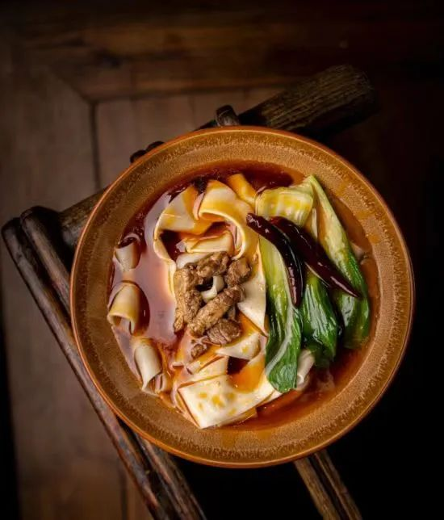
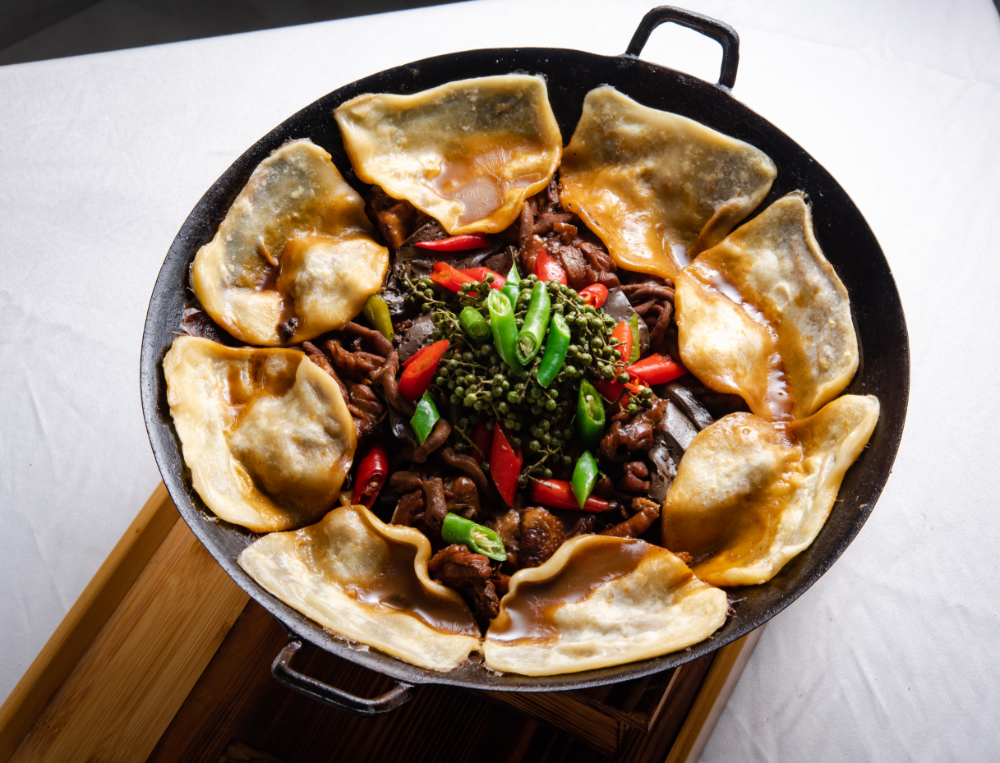
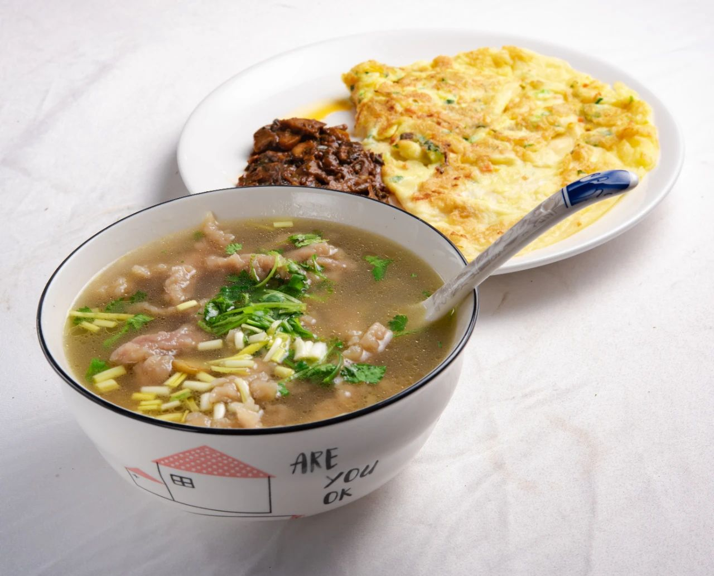
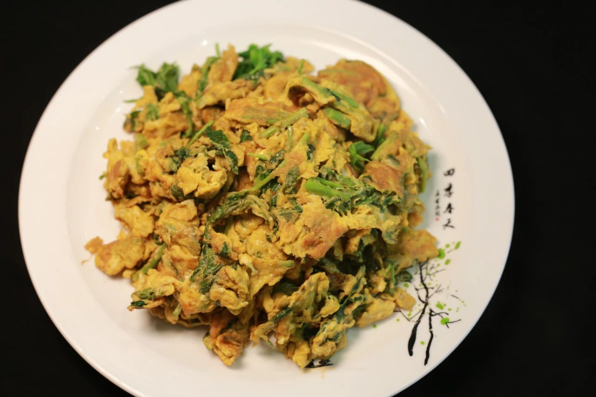
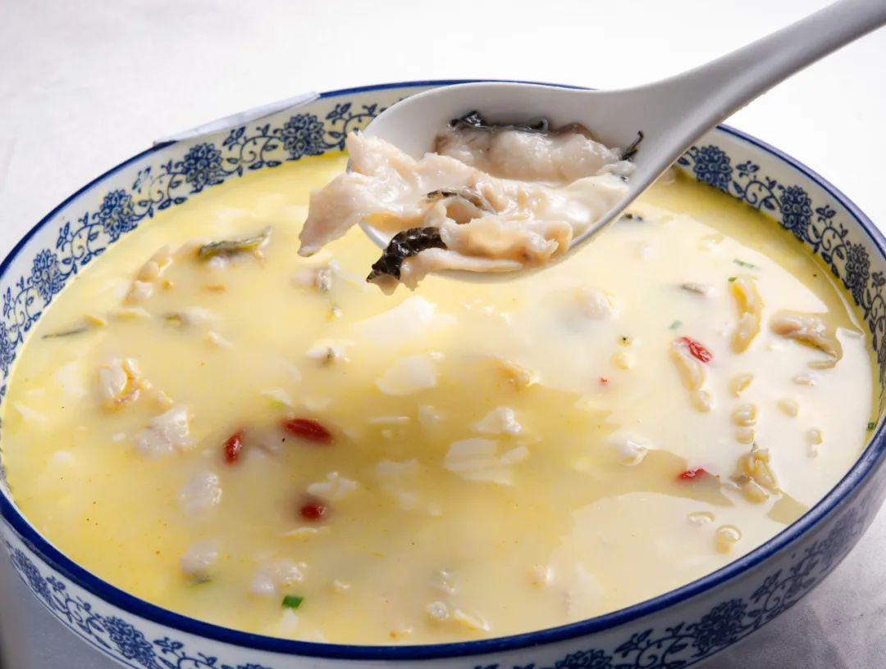

饮食文化
太和县，位于阜阳西北部这里土地五谷丰登薄荷、香椿、桔梗、樱桃闻名天下肥沃的土地，丰富的物产为人们的一日三餐提供了丰富的条件
太和板面
板面是太和特色小吃，因在案板上摔打制作而得名。面条紧实筋道、面汤浇上卤料鲜辣浓郁，白的面条，绿的菜叶，红的汤料，观之食欲大增。特色，而且味道醇厚，花色品种多。
太和藤椒风味地锅鸡
地锅鸡起源于清朝，发源于皖北颍州地区，地锅鸡蛋白质高、脂肪含量低，搭配多味名贵中草药，并加入太和本地产的藤椒，对于营养不良，疲劳无力，脾胃湿弱等症状有良好的调理作用，味道麻辣鲜香，别具一番风味，深受食客喜爱。。
太和粉羊肉
粉羊肉是太和县本地回族特色菜品，选用太和本地小山羊，因为沙颍河从太和境内穿流而过，县内河流小溪分支众多，岸边草木茂密适合放养本地山羊，吃草长大的羊肉肉质细嫩，味道鲜美，香而不膻，经过太和人的潜心研制，做出了外地粉羊肉无法达到的美味。
贡椿炒蛋
香椿是阜阳太和特产，因其品质高，古时曾为贡品，故称贡椿。贡椿炒蛋，有黄有绿，油光鲜亮，清香无比，极具营养价值，是当地人民喜爱的大众美食。
太和鲜汤豆花鱼
豆花鱼口味麻辣鲜香，本属于川菜，但是太和县沙河过境，黑鱼鲜嫩，做出的豆花鱼口味麻辣鲜香，滑爽细嫩，一方面能满足嗜辣喜荤的人们的需要，又能保证吃了不上火。太和豆花鱼在当地盛行。
